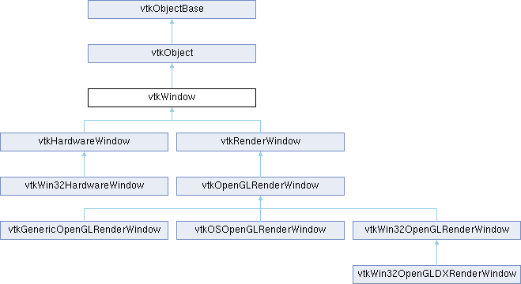

|
Etrek
|
|
Etrek
|
window superclass for vtkRenderWindow More...
#include <vtkWindow.h>

Public Member Functions | |
| vtkTypeMacro (vtkWindow, vtkObject) | |
| void | PrintSelf (ostream &os, vtkIndent indent) override |
| int * | GetActualSize () VTK_SIZEHINT(2) |
| virtual int * | GetScreenSize () VTK_SIZEHINT(2) |
| virtual void | SetIcon (vtkImageData *) |
| virtual VTK_UNBLOCKTHREADS void | Render () |
| virtual void | ReleaseGraphicsResources (vtkWindow *) |
| virtual bool | DetectDPI () |
| vtkTypeBool | GetOffScreenRendering () |
| virtual void | MakeCurrent () |
| virtual void | ReleaseCurrent () |
| virtual void | SetDisplayId (void *) |
| virtual void | SetWindowId (void *) |
| virtual void | SetParentId (void *) |
| virtual void * | GetGenericDisplayId () |
| virtual void * | GetGenericWindowId () |
| virtual void * | GetGenericParentId () |
| virtual void * | GetGenericContext () |
| virtual void * | GetGenericDrawable () |
| virtual void | SetWindowInfo (const char *) |
| virtual void | SetParentInfo (const char *) |
| virtual bool | EnsureDisplay () |
| virtual int * | GetPosition () VTK_SIZEHINT(2) |
| virtual void | SetPosition (int x, int y) |
| virtual void | SetPosition (int a[2]) |
| virtual int * | GetSize () VTK_SIZEHINT(2) |
| virtual void | SetSize (int width, int height) |
| virtual void | SetSize (int a[2]) |
| vtkGetMacro (Mapped, vtkTypeBool) | |
| vtkGetMacro (ShowWindow, bool) | |
| vtkSetMacro (ShowWindow, bool) | |
| vtkBooleanMacro (ShowWindow, bool) | |
| vtkSetMacro (UseOffScreenBuffers, bool) | |
| vtkGetMacro (UseOffScreenBuffers, bool) | |
| vtkBooleanMacro (UseOffScreenBuffers, bool) | |
| vtkSetMacro (Erase, vtkTypeBool) | |
| vtkGetMacro (Erase, vtkTypeBool) | |
| vtkBooleanMacro (Erase, vtkTypeBool) | |
| vtkSetMacro (DoubleBuffer, vtkTypeBool) | |
| vtkGetMacro (DoubleBuffer, vtkTypeBool) | |
| vtkBooleanMacro (DoubleBuffer, vtkTypeBool) | |
| vtkGetStringMacro (WindowName) | |
| vtkSetStringMacro (WindowName) | |
| virtual unsigned char * | GetPixelData (int, int, int, int, int, int=0) |
| virtual int | GetPixelData (int, int, int, int, int, vtkUnsignedCharArray *, int=0) |
| vtkGetMacro (DPI, int) | |
| vtkSetClampMacro (DPI, int, 1, VTK_INT_MAX) | |
| void | SetOffScreenRendering (vtkTypeBool val) |
| vtkBooleanMacro (OffScreenRendering, vtkTypeBool) | |
| vtkSetVector2Macro (TileScale, int) | |
| vtkGetVector2Macro (TileScale, int) | |
| void | SetTileScale (int s) |
| vtkSetVector4Macro (TileViewport, double) | |
| vtkGetVector4Macro (TileViewport, double) | |
| Public Member Functions inherited from vtkObject | |
| vtkBaseTypeMacro (vtkObject, vtkObjectBase) | |
| virtual void | DebugOn () |
| virtual void | DebugOff () |
| bool | GetDebug () |
| void | SetDebug (bool debugFlag) |
| virtual void | Modified () |
| virtual vtkMTimeType | GetMTime () |
| void | RemoveObserver (unsigned long tag) |
| void | RemoveObservers (unsigned long event) |
| void | RemoveObservers (const char *event) |
| void | RemoveAllObservers () |
| vtkTypeBool | HasObserver (unsigned long event) |
| vtkTypeBool | HasObserver (const char *event) |
| vtkTypeBool | InvokeEvent (unsigned long event) |
| vtkTypeBool | InvokeEvent (const char *event) |
| std::string | GetObjectDescription () const override |
| unsigned long | AddObserver (unsigned long event, vtkCommand *, float priority=0.0f) |
| unsigned long | AddObserver (const char *event, vtkCommand *, float priority=0.0f) |
| vtkCommand * | GetCommand (unsigned long tag) |
| void | RemoveObserver (vtkCommand *) |
| void | RemoveObservers (unsigned long event, vtkCommand *) |
| void | RemoveObservers (const char *event, vtkCommand *) |
| vtkTypeBool | HasObserver (unsigned long event, vtkCommand *) |
| vtkTypeBool | HasObserver (const char *event, vtkCommand *) |
| template<class U, class T> | |
| unsigned long | AddObserver (unsigned long event, U observer, void(T::*callback)(), float priority=0.0f) |
| template<class U, class T> | |
| unsigned long | AddObserver (unsigned long event, U observer, void(T::*callback)(vtkObject *, unsigned long, void *), float priority=0.0f) |
| template<class U, class T> | |
| unsigned long | AddObserver (unsigned long event, U observer, bool(T::*callback)(vtkObject *, unsigned long, void *), float priority=0.0f) |
| vtkTypeBool | InvokeEvent (unsigned long event, void *callData) |
| vtkTypeBool | InvokeEvent (const char *event, void *callData) |
| virtual void | SetObjectName (const std::string &objectName) |
| virtual std::string | GetObjectName () const |
| Public Member Functions inherited from vtkObjectBase | |
| const char * | GetClassName () const |
| virtual vtkTypeBool | IsA (const char *name) |
| virtual vtkIdType | GetNumberOfGenerationsFromBase (const char *name) |
| virtual void | Delete () |
| virtual void | FastDelete () |
| void | InitializeObjectBase () |
| void | Print (ostream &os) |
| void | Register (vtkObjectBase *o) |
| virtual void | UnRegister (vtkObjectBase *o) |
| int | GetReferenceCount () |
| void | SetReferenceCount (int) |
| bool | GetIsInMemkind () const |
| virtual void | PrintHeader (ostream &os, vtkIndent indent) |
| virtual void | PrintTrailer (ostream &os, vtkIndent indent) |
| virtual bool | UsesGarbageCollector () const |
Protected Attributes | |
| char * | WindowName |
| int | Size [2] |
| int | Position [2] |
| vtkTypeBool | Mapped |
| bool | ShowWindow |
| bool | UseOffScreenBuffers |
| vtkTypeBool | Erase |
| vtkTypeBool | DoubleBuffer |
| int | DPI |
| double | TileViewport [4] |
| int | TileSize [2] |
| int | TileScale [2] |
| Protected Attributes inherited from vtkObject | |
| bool | Debug |
| vtkTimeStamp | MTime |
| vtkSubjectHelper * | SubjectHelper |
| std::string | ObjectName |
| Protected Attributes inherited from vtkObjectBase | |
| std::atomic< int32_t > | ReferenceCount |
| vtkWeakPointerBase ** | WeakPointers |
Additional Inherited Members | |
| Static Public Member Functions inherited from vtkObject | |
| static vtkObject * | New () |
| static void | BreakOnError () |
| static void | SetGlobalWarningDisplay (vtkTypeBool val) |
| static void | GlobalWarningDisplayOn () |
| static void | GlobalWarningDisplayOff () |
| static vtkTypeBool | GetGlobalWarningDisplay () |
| Static Public Member Functions inherited from vtkObjectBase | |
| static vtkTypeBool | IsTypeOf (const char *name) |
| static vtkIdType | GetNumberOfGenerationsFromBaseType (const char *name) |
| static vtkObjectBase * | New () |
| static void | SetMemkindDirectory (const char *directoryname) |
| static bool | GetUsingMemkind () |
| Protected Member Functions inherited from vtkObject | |
| void | RegisterInternal (vtkObjectBase *, vtkTypeBool check) override |
| void | UnRegisterInternal (vtkObjectBase *, vtkTypeBool check) override |
| void | InternalGrabFocus (vtkCommand *mouseEvents, vtkCommand *keypressEvents=nullptr) |
| void | InternalReleaseFocus () |
| Protected Member Functions inherited from vtkObjectBase | |
| virtual void | ReportReferences (vtkGarbageCollector *) |
| vtkObjectBase (const vtkObjectBase &) | |
| void | operator= (const vtkObjectBase &) |
| Static Protected Member Functions inherited from vtkObjectBase | |
| static vtkMallocingFunction | GetCurrentMallocFunction () |
| static vtkReallocingFunction | GetCurrentReallocFunction () |
| static vtkFreeingFunction | GetCurrentFreeFunction () |
| static vtkFreeingFunction | GetAlternateFreeFunction () |
window superclass for vtkRenderWindow
vtkWindow is an abstract object to specify the behavior of a rendering window. It contains vtkViewports.
|
inlinevirtual |
Attempt to detect and set the DPI of the display device by querying the system. Note that this is not supported on most backends, and this method will return false if the DPI could not be detected. Use GetDPI() to inspect the detected value.
Reimplemented in vtkWin32OpenGLRenderWindow.
| int * vtkWindow::GetActualSize | ( | ) |
GetSize() returns the size * this->TileScale, whereas this method returns the size without multiplying with the tile scale. Measured in pixels.
|
inlinevirtual |
Reimplemented in vtkOSOpenGLRenderWindow.
|
inline |
Deprecated, directly use GetShowWindow and GetOffScreenBuffers instead.
|
inlinevirtual |
Get the pixel data of an image, transmitted as RGBRGBRGB. The front argument indicates if the front buffer should be used or the back buffer. It is the caller's responsibility to delete the resulting array. It is very important to realize that the memory in this array is organized from the bottom of the window to the top. The origin of the screen is in the lower left corner. The y axis increases as you go up the screen. So the storage of pixels is from left to right and from bottom to top. (x,y) is any corner of the rectangle. (x2,y2) is its opposite corner on the diagonal.
Reimplemented in vtkOpenGLRenderWindow.
|
virtual |
Get the position (x and y) of the rendering window in screen coordinates (in pixels).
Reimplemented in vtkOSOpenGLRenderWindow, and vtkWin32OpenGLRenderWindow.
|
inlinevirtual |
Get the current size of the screen in pixels.
Reimplemented in vtkGenericOpenGLRenderWindow, vtkOSOpenGLRenderWindow, and vtkWin32OpenGLRenderWindow.
|
virtual |
Get the size (width and height) of the rendering window in screen coordinates (in pixels).
Reimplemented in vtkWin32OpenGLRenderWindow.
|
inlinevirtual |
Make the window current. May be overridden in subclasses to do for example a glXMakeCurrent or a wglMakeCurrent.
Reimplemented in vtkGenericOpenGLRenderWindow, vtkOSOpenGLRenderWindow, and vtkWin32OpenGLRenderWindow.
|
overridevirtual |
|
inlinevirtual |
Release the current context. May be overridden in subclasses to do for example a glXMakeCurrent or a wglMakeCurrent.
Reimplemented in vtkWin32OpenGLRenderWindow.
|
inlinevirtual |
Release any graphics resources that are being consumed by this texture. The parameter window could be used to determine which graphic resources to release.
Reimplemented in vtkOpenGLRenderWindow.
|
inlinevirtual |
Ask each viewport owned by this Window to render its image and synchronize this process.
Reimplemented in vtkGenericOpenGLRenderWindow, vtkOpenGLRenderWindow, and vtkRenderWindow.
|
inlinevirtual |
These are window system independent methods that are used to help interface vtkWindow to native windowing systems.
Reimplemented in vtkGenericOpenGLRenderWindow, vtkOSOpenGLRenderWindow, vtkRenderWindow, vtkWin32HardwareWindow, and vtkWin32OpenGLRenderWindow.
|
inlinevirtual |
Set the icon used in title bar and task bar. Currently implemented for OpenGL windows on Windows and Linux.
Reimplemented in vtkWin32OpenGLRenderWindow.
|
inline |
Convenience to set SHowWindow and UseOffScreenBuffers in one call
|
inlinevirtual |
Reimplemented in vtkOSOpenGLRenderWindow.
|
inlinevirtual |
Reimplemented in vtkOSOpenGLRenderWindow, and vtkWin32OpenGLRenderWindow.
|
virtual |
Set the position (x and y) of the rendering window in screen coordinates (in pixels). This resizes the operating system's view/window and redraws it.
Reimplemented in vtkOSOpenGLRenderWindow, vtkWin32HardwareWindow, and vtkWin32OpenGLRenderWindow.
|
virtual |
Set the size (width and height) of the rendering window in screen coordinates (in pixels). This resizes the operating system's view/window and redraws it.
If the size has changed, this method will fire vtkCommand::WindowResizeEvent.
Reimplemented in vtkOSOpenGLRenderWindow, vtkWin32HardwareWindow, vtkWin32OpenGLDXRenderWindow, and vtkWin32OpenGLRenderWindow.
|
inlinevirtual |
Reimplemented in vtkGenericOpenGLRenderWindow, and vtkOSOpenGLRenderWindow.
|
inlinevirtual |
Reimplemented in vtkOSOpenGLRenderWindow, and vtkWin32OpenGLRenderWindow.
| vtkWindow::vtkGetMacro | ( | DPI | , |
| int | ) |
Return a best estimate to the dots per inch of the display device being rendered (or printed).
| vtkWindow::vtkGetMacro | ( | Mapped | , |
| vtkTypeBool | ) |
Keep track of whether the rendering window has been mapped to screen.
| vtkWindow::vtkGetMacro | ( | ShowWindow | , |
| bool | ) |
Show or not Show the window
| vtkWindow::vtkGetStringMacro | ( | WindowName | ) |
Get name of rendering window
| vtkWindow::vtkSetMacro | ( | DoubleBuffer | , |
| vtkTypeBool | ) |
Keep track of whether double buffering is on or off
| vtkWindow::vtkSetMacro | ( | Erase | , |
| vtkTypeBool | ) |
Turn on/off erasing the screen between images. This allows multiple exposure sequences if turned on. You will need to turn double buffering off or make use of the SwapBuffers methods to prevent you from swapping buffers between exposures.
| vtkWindow::vtkSetMacro | ( | UseOffScreenBuffers | , |
| bool | ) |
Render to an offscreen destination such as a framebuffer. All four combinations of ShowWindow and UseOffScreenBuffers should work for most rendering backends.
| vtkWindow::vtkSetVector2Macro | ( | TileScale | , |
| int | ) |
These methods are used by vtkWindowToImageFilter to tell a VTK window to simulate a larger window by tiling. For 3D geometry these methods have no impact. It is just in handling annotation that this information must be available to the mappers and the coordinate calculations.